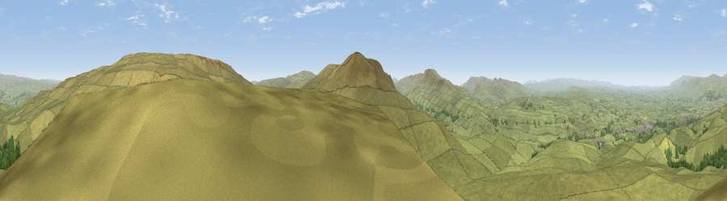

Viewpoint near Nateby
#4331 in England · top 7% of its area beats it · near NatebyThe view, rendered

A 360° render of this exact spot computed from the terrain model, tree cover and land cover — summer colours, afternoon light, calibrated against photographs of famous viewpoints. Real trees, hedges and buildings will differ in detail.
The panorama
Grey silhouette: terrain skyline in each direction (720 bearings, Earth curvature and refraction included). Dashed green: skyline with trees (+15 m) and buildings (+8 m) as obstacles. Blue strip: how far the ground is visible on each bearing.
Where the view opens
Wedge length = distance to the farthest visible ground on that bearing (vegetation-aware). Rings at 10, 25 and 50 km.
What fills the view
97% grassland · 2% woodland
Angular shares of the visible panorama (visual magnitude), not map area. Landscape diversity 0.07 (0–1 Shannon).
Key numbers
More beautiful places nearby
The staircase of upgrades: each row has a higher view potential than everything closer. Driving times are estimates from straight-line distance, calibrated against real road routing — check an actual route before setting out.
| Place | Direction | Drive | Score |
|---|---|---|---|
| Viewpoint near Nateby | S · 2 km | ~5 min | 75.0 |
| Viewpoint near Nateby | S · 4 km | ~8 min | 75.7 |
| Viewpoint c10024_7603 | S · 4 km | ~10 min | 76.9 |
| Calders | SW · 16 km | ~28 min | 79.0 |
| Calf Top | SW · 24 km | ~39 min | 79.8 |
| Crag Hill | SSW · 25 km | ~40 min | 80.0 |
| Viewpoint near Bampton | WNW · 34 km | ~53 min | 80.4 |
| High Street (summit) | W · 36 km | ~55 min | 82.6 |
54.44339, -2.30547 · source: screening · position refined by local search. Computed location — check access rights before visiting.